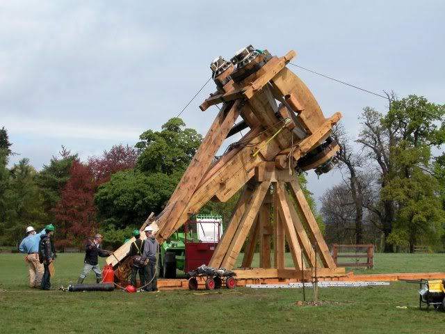

ROMAN ARTILLERY: THE REPUBLIC AND EARLY EMPIRE
The legacy of the Greeks
It is often asserted that, where machinery is concerned, the Romans displayed litle inventive genius. Vitruvius, the Roman architect-engineer who wrote a work 'On architecture' (De architectura) around 25 Bc, laments the fact that so many of his sources are Greeks and so few Romans. However, the development of water power, for example, shows that the Romans were keen to adopt existing Greek technology and apply it in ever more ingenious ways.
Their acquaintance with artillery during the course of the First: Punic War (264-241 Bc) appears to have been brief, and their use of the weapon during the Second Punic War (218-201 8C) was the result of confiscation rather than manufacture. Some of the machines found in Roman hands were seized from the Carthaginians; for example, their capture of Cartagena in 210 BC reportedly brought the Romans a huge haul of war material, including ‘120 catapults of the largest sort, 281 smaller ones, 23 large ballistae, 52 smaller ones, and large and small scorpions’. Other catapults were no doubt requisitioned from the Greek towns of Sicily, one of the main theatres of the war. Certainly, according to Livy (a close contemporary of Vitruvius), the Roman capture of Syracuse in 211 Bc brought ‘catapults and bailistae and all the other equipment of war’, showing that the town had remained at the forefront of military technology.
Artillery in the Republic
Roman stocks of artillery would have been further replenished with the booty from campaigning in Greece during wars with Macedon (200-196 Bc), Sparta (195 Bc), and the Aetolian Confederacy (191-189 Bc). Mural artillery was becoming increasingly common in towns of the Mediterranean world, as engineers took their knowledge wherever people could pay for it. Catapults mentioned on board ships at this ime were probably supplied by Rhodes and Pergamon, Rome’s naval allies against Macedon, but the ‘catapults, ballistae, and artillery of all sorts’ that appeared in the triumphal procession of 187 BC in Rome were surely booty seized from the Aetolians.
Roman armies continued to use artillery in a piecemeal fashion, generally requisitioning machines whenever necessary. It is only with the campaigns of Julius Caesar in the 50s Bc that we finally gain the impression of artillery as standard equipment, with at least lightweight arrow-firers regularly accompanying the legions. Although still chiefly used in siege warfare, these weapons found more imaginative employment in Caesar's hands; in defence of camp, for example, or on board ships in support of amphibious landings.
It is into this context that the most famous artillery find of all should be set. In 1912, the complete iron-clad spring-frame of a slightly undersized three-span arrow-firer came to light at Ampurias in Spain. More recently, another two spring-frames were discovered in Spain. The first, from Azaila, is apparently now lost, apart from one washer; the spring-diameter of 9.4cm suggests a four-span machine. The other, from Caminreal, is technically a 34%span machine, but the 8.4cm washers are slightly too large, and must have been used either in error or out of necessity.
Vitruvius’s arrow-firer
By the 20s Bc, when Vitruvius came to describe the arrow-firer in his general survey of machinery, one or two significant changes had been made to the old euthytone. Of course, in place of the daktyl, Roman measurements used the marginally smaller digit. But, more importantly, a new Latin vocabulary was intoduced for components that, until now, had been known by Greek names. In particular, the spring-diameter, diametros, came to be known as the foramen, and the washer (choinix in Greek) was now the modiolus. Also, Latin authors tended to use the collective term tormenta (torsion engines) for artillery, with arrow-firers individually designated catapultae (from the Greek term, katapeltai oxybeleis), except for small-calibre models, which evidently attracted the term scorpio (scorpion).
Terminology was not the only change. Vitruvius’s text highlights a fundamental difference in the shape and design of the arrow-firer's spring- frame. Where Philon’s upnghts were 3% spring-diameters high, Vitruvius specifies 4 diameters, and where Philon’s peritréta were 6% spring-diameters long, Vitruvius specifies only 6 diameters. Thus, the Vitruvian spring-frame was narrower and taller. The saving in width was achieved by a refinement of design, as can be seen in the Ampurias and Caminreal machines. Philon’s twin central uprights, which flanked the syrinx to create a firm bond between spring-frame and catapult stock, were removed. In their place, Vitruvius’s spring-frame (called the capitulum, or ‘capital’) had a single central upright, with two apertures; one, to allow the slider to run forward, and another below it, which can only have been intended for wedging the syrinx (now called the canaliculus, or ‘channel’) in place.
Also, it seems that, through time, the profile of the washers became gradually higher in relation to the diameter. The type 3 washers from Ephyra, for example, are 0.4 diametros high; these are thought to be amongst the earliest to use the pin-hole locking system, and could be 3rd century BC in date. By contrast, the type 5 Ephyra washers are 0.5 diametros high, as are the slightly larger Ampurias washers, both of these are presumed to be mid-2nd century Bc. The Caminreal washers, from the Ist century BC, are 0.6 foramen high, like the contemporary Mahdia washers, while those found at Cremona, dating a century or so later, are 0.7 foramen high. It is clear that the ratio between spring-diameter and washer height was gradually increasing, so Vitruvius’s springs no longer adhered to Philon’s proportions.
A further development involved the curving of the catapulta’s bow-arms, so that, at rest, the tips were further forward than their straight- arm predecessor. This effectively increased the angle of recoil from 35 degrees to 47 degrees, and meant that, on spanning, more energy could be stored in the springs. Both of these changes must have produced a more powerful machine.
Vitruvius’s stone-projector
Although Greek authors continued to use the terms lithobolos and petrobolos, under the Romans the stone-projector became known as the ballista. For this machine, we are totally reliant on Vitruvius’s description, because archaeology has failed to provide the kind of supplementary evidence that has aided the interpretation of the catapulta. This is unfortunate, as Vitruvius’s text has suffered badly in transmission, and ambiguity surrounds the interpretation of several key passages.
One of these passages concerns the correlation of machine size to missile weight. Like the old stone-projector, each individual ballista was tailored to the appropriate missile, and the crucial measurement was, of course, the spring-diameter. Vitruvius duly lists a series of weights in librae (Roman pounds), each with a corresponding foramen. However, where Philon and Heron quote the Greek conversion formula as the source of their measurements, Vitruvius claims that he drew his infor- mation from personal experience and from his teachers, supplemented with calculations ‘made by the Greeks but converted to the Roman system’.
Scholars have often thought it curious that Vitruvius’s weights are paired with much smaller spring-diameters than the Greek formula would suggest. Drachmann pointed to Vitruvius’s recommendation of 10-digit (185mm) springs for a 20-pound (6.55kg) missile; Philon would have used 12%dactyl (240mm) springs for the same weight (15 minas). Drachmann realised that there were three possible explanations for this: perhaps Vitruvius was mistaken; or the Romans used under-powered machines; or their springs were somehow more efficient. He decided that, since the Roman author Heron quoted the same Greek formula as Philon, it must sull have applied in Roman times, and the fault must le with Vitruvius. But, of course, Heron was simply quoting the work of Ctesibius, from the days before even Philon; his catapults were of Greek, not Roman, design. Equally, Vitruvius is unlikely to have made such a fundamental error as quoting dimensions in digiti (l6ths of a foot) when he meant unciae (12ths of a foot), as Marsden suggested. And, since it is unthinkable that the Romans would have been satisfied with under-powered machines, it seems that their ballistae really were more efficient than the old stone- projectors of the Greeks. How was this achieved?
Apart from possible improvements in spring material, about which we know very little, greater efficiency could have come from an increase in spring volume. Vitruvius’s description shows that the ballista’s spring-frame was built to roughly the same proportions as the old stone-pro-jector’s, but there is good reason to suppose that the springs were thicker.
In his description of the peritréton (which, for the ballista alone, he also calls the scutula, or ‘diamond’), Vitruvius claims that the spring-hole should be oval rather than circular, and that the amount of elongation should offset the area occupied by the washer’s lever (epizygis). However, Schramm pointed out that an oval spring-hole would make it impossible to turn the washer and twist the torsion-spring; he suggested that it was the upper rim of the washer that was oval, the lower rim remaining circular. Although this would be difficult to manufacture, the design makes perfect sense; in the standard cylindrical washer, the presence of the lever across the upper rim restricts the amount of spring-cord that can be forced through the spring-hole; in effect, there will always be a vacant space beneath the lever. But, by splaying the washer internally, the space occupied by the lever can be reclaimed and the spring-hole can be entirely filled with spring-cord.
It would seem, then, that more densely packed spring-cord allowed Roman engineers to build smaller ballistae for heavier missiles. The largest ballista in regular Roman service was probably the 80-pounder, which shot a 26kg missile. This was equivalent to the old-style 1-talent stone-projector, for which the Greek formula gives a diametros of 20 daktyls (38.5cm). (Philon’s text actually reads KA, or kappa alpha/20 + 1 in the alphabetic system, which may have been an attempt to slightly increase the size of this heavy-duty machine.) At any rate, its springs were 3.47m high, its stock over 7m long, and the distance from the tip of one arm to the up of the other well over 5 m. By contrast, Vitruvius gives his machine a foramen of 17% digits (32.4cm), which results in springs only 2.82m high, and a machine whose overall size was a metre smaller than Philon’s in length and width.

Artillery in the early Empire
The historian Josephus, writing about Rome's Jewish War (Bellum Judaicum) around ap 75, describes the artillery of the imperial legions in action. In Ab 67, no fewer than 160 catapults were deployed, alongside archers and slingers, for the future emperor Vespasian’s assault on Jotapata. These included arrow-firers shooting incendiary missiles, and massive l-talent (26kg) stone-projectors. The latter perhaps belonged to Legion X Fretensis, which famously besieged Masada in Ab 74. That legion’s one-talent machines were apparently the largest ballistae at Jerusalem, during the siege of Ab 70. Josephus claims that the huge white ballista balls had to be blackened, so that the defenders could not track their long approach and take evasive action.
During the civil war that brought Vespasian to the throne, his enemies deployed artillery for the night battle outside Cremona in AD 69. The writer Tacitus’s story of how two soldiers managed to disable a large stone-projector is one of the last explicit references to the stone-throwing ballista. But more graphical evidence of the battle comes from the archaeological remains. All eight washers and two front shields (one very fragmentary) from two arrow-firers were discovered in a pit near the battlefield, where they had perhaps been hidden by scavengers. The foramina of the washers indicate a 3-span machine and a larger one of around 2/ft.
THE ROMAN ARTILLERY REVOLUTION
The iron-framed arrow-firer
It was long ago realised that the catapults depicted on Trajan’s Column differed noticeably from those on earlier relief sculpture. The column's yreat spiral frieze depicts the events of Trajan’s Dacian Wars (AD 101-2 and 105-6), and was sculpted during the period prior to its official dedication in Ad 13. Thus the new design of catapult must have been introduced before that date.
Schramm believed that ‘Trajan’s catapults differed from earlier machines in only one respect, namely that the torsion-springs were apparently enclosed in weatherproof cilinders. But it was left to Marsden to elucidate the true nature of the redesign, which involved nothing less than the abandonment of the old euthytone design, last glimpsed on the Vedennius tombstone of the Ad 80s or 90s. Henceforth, the arrow-firer would have separate springs, like the palintone stone-projector, and it duly became known, somewhat confusingly, as a ballista.
Heron’s Cheiroballistra
The clue to the identity of the new arrow-firing ballista lies in a dark and difficult Greek text entitled ‘Construction and dimensions of Heron's cheiroballistra’. Its dating is not certain, though scholars have generally been at pains to dissociate it from the Ist-century Heron of Alexandria. (The author is sometimes dubbed Pseudo-Heron to emphasise this.) The argument rests chiefly on the grounds that, as the machine only appears after AD 100, a Neronian engineer cannot have written about it, and it must be admitted that the chronology would be a litle tight.
The importance of the text rests upon Marsden’s realisation that the machine it describes, the cheiroballistra or ‘hand ballista’ (the Latin form, manuballista, is found elsewhere), closely resembles the artillery depicted on Trajan’s Column. The text actually consists of a list: of component parts with their dimensions, rather than proper assembly instructions. In summary, there is a stock, comprising the familiar pipe and slider, and incorporating a crescent-shaped fitting at the rear; a trigger mechanism, fitted to the slider; a pair of frames called kambestria (Marsden’s ‘field-frames’); four washers with levers; two) struts, one arched (kamarion) and one laddered (klimakion); and two bow-arms.
Marsden realised that each kambestrion, comprising two iron rings held apart by two iron posts, was intended to hold a torsion-spring, just like the individual springs of the palintone stone-projector. (Like Schramm, he enclosed each spring in a thin metal cylinder, but the sculptural evidence of Trajan’s Column is ambiguous on this point.) Marsden further reasoned that the two struts, the kamarion and klimakion, took the place of the wooden framework of the stone-projector, and were intended to link the two kambestria. In fact, the struts each terminate in a pair of brackets, whose forked ends are the same distance apart as the iron uprights of the kambestria. Marsden cleverly drew the conclusion that these brackets were intended to grip the ‘field-frames’ at the top and bottom, and hold them in place.
All of the components are reasonably easily deciphered, at least with the benefit of Marsden’s analysis, vet the design of the chetroballistra remains controversial. A strict reading of the text results in a very small machine, as befits a hand weapon. For example, the stock measures roughly one metre in length; the field-frames, 20.6cm high (11 1/6 daktyls) with a 3.7cm (2 daktyls) spring-hole, are set 43.5cm (1ft. 7 1/2 daktyls) apart; the bow-arms are only 20.4cm long (11 daktyls); and the washers have a tiny spring-diameter of 2.5cm (1 1/3 daktyls).
Although no components matching the dimensions in the text have ever been found, small torsion-powered hand weapons are known to have existed in the ancient world. The type 6 washer from Ephyra has an inner diameter of 3.4cm; two slightly larger examples have been discovered in Britain, one from Elginhaugh (3.5cm) and the other from Bath (4.0cm); and two late Roman examples were found at Volubilis in Morocco (4.1 and 4.4cm). Nevertheless, successive commentators have tried to enlarge various components to make a full-sized catapult, although it seems obvious that the cheiroballistra was a hand-held weapon. In particular, the crescent-shaped fituing at the rear of the stock served the same purpose as the stomach-rest of the old gastraphetes.
The design of the arrow-firing ballista: the field-frames
Marsden did not live to see the archaeological confirmation of his conjectures. In fact, over the last 30 years, largely due to the efforts of the German scholar Dietwulf Baatz, parts from iron-framed catapults have gradually come to light from several late-Roman sites. Unfortunately, none exactly matches the minuscule dimensions of the cheiroballistra, but the same basic design can be discerned, enlarged into a full-size catapult.
Compared with the cheiroballistra, the three kambestria found at Gornea (Romania) are shorter (13.3, 14.4, 14.6cm), but have wider spring-holes (5.4, 5.9, 5.4cm); the single kambestrion from Lyon (France) is much taller (32.5cm) and wider (spring-hole approx. 9cm); the one from Orsova (Romania) is even taller (36cm) but narrower (spring-hole 7.9cm); and the one from Sala (Morocco) is taller still (37.4cm; spring- hole 8cm). It seems that, whereas the old-style catapults maintained a basic relationship between spring-height and diameter, the same cannot be said for the new-style iron-framed machines.
Of course, the kambestrion does not tell the whole story. The washers, situng at either end, increased the overall spring-height and determined the spring-diameter, It must be remembered that the old-style ballistas spring-hole was recessed to receive the washer, and consequently had the same spring-diameter; by contrast, the newsstvle ballistas washer sat within the kambestron’s: spring-hole, with the result: that the spring-diameter was smaller than the spring-hole. This is) best Hlustrated by the Lyon kambestrron, which sall has its original washers: the spring-hole is roughly 9em m= diameter, but the inner diameter of the washers (and hence the spring-diameter) is only 7.5cm. Furthermore, the washers are roughly 6cm high. making the total spring height 44.5cm, equivalent to almost six spring-diameters. By contrast, the cherroballistra washers sit 2.9cm (1 7/12 daktyls) above the kambestrion, giving a spring-height of 26.4cm. which is more than ten spring-diameters.
The design of the arrow-firing ballista: the spring-frame
Several individual washers are Known from late contexts, but they tell us litle without their associated kambestria, A different association exists at Orsova, where the kambestrion was found with a kamarion, the long arched: strut that connected the tops of the field-frames. Again, this component is: far larger than the one in Heron's cheiroballistra text. The strut has suffered damage at both ends, but enough survives to confirm: that the forks of each bracket were about 18cm apart. As the kambestrion is 17.5cm wide, and could comfortably be gripped by the kamarion, it seems fairly likely that the two components belong together.
The Orsova combinationn produces a very low frame, with a width-to-height rato of more than 3:1, whereas the one described in the cheiroballistra text is only 2:1. Did a different set of proportions apply to the stand-mounted version of the machine? Marsden had decided to double the height of the cheiroballistra field-trames, in the belef that the machine's proportions should resemble those of its Vitruvian pre- decessors as far as possible. However, Baatz largely restored the orginal dimensions, and explamed the wide frame as an aid to observing potential tar gets. In addition, it solved a serious problem of the Vitruvian design, namely the possibility of the arrow ricocheting off the wooden uprights during its passage through the narrow gap (dioptra) in the spring-frame.
The stone-projecting ballista
It is usually assumed that the stone-projecting dballista continued in operation, although Tacitus, writing around Ap 100, is the last: to mention it by name. No stone-projectors appear on ‘Trajan’s Column, and the Hadrianic writer Arrian simply calls his) stone-projectors ‘machines’ (méchanat).
The remains of a medium-sized catapult found in the ruins of Hatra (Iraq) have been hailed as evidence of the stone-projecting ballista in the early 3rd) century AD. However, the discovery has presented scholars with something of a puzzle. Only the 2mim-thick bronze plating for the spring-frame survived, where the catapult had toppled forwards onto the ground (see drawing on p.45); the wooden stock and stand had long since disappeared, but three of the four washers survived. These were of such robust) construction that, when he studied the finds in 1975, Baatz considered them to have come from a medium-sized stone-projector, He duly reconstructed the machine, albeit: tentatively, as a variant form) of Vitruvius’s 10-pound ballista.
Baatz noted the wide-set: springs and the unusually squat: frame. However, the semicircular cut-outs on the side uprights defied all expla- nation atthe time. Although similar to the cut-outs in the Vitruvian ballista, thev are clearly in the wrong place, facing inwards instead of backwards. But, if their purpose is the same -— namely, to provide free space so that the arms do not hit the wooden upright -— then it would) seem: that the arms of the Hlatra ballista were arvanged in a different) manner from those of the Vitruvian ballista, In fact, the peculiar design of spring-frame only makes sense with imterior-SWINgZINY arms.
The idea of interior swinging arms Is not a new one, but it has never achieved wide acceptance, no doubt owing to. the lack of a full-size replica to demonstrate the practcalities. The action, though unfamiliar ois straight-forward. When at- rest, the arms project forwards. On spanning, thev are drawn back through the wide cmpty frame; in the process they travel through an are approximately twice as long as the Vitruvian palintone, storing double the energy. On release, the arms spring forward until stopped by the bowstring; as in earlier palintones, the arms do not hit the frame uprights, but swing into the free space created by the cut-outs.
The Spanish scholar Aitor Iriarte has observed that the cut-outs perfectly echo the same feature on the iron-framed dallista, which may suggest that these, too, had interior-swinging arms. This is certainly the opinion of the British scholar Michael Lewis, who has even questioned the identification of the Hatra machine as a stone-projector, suggesting that it was in fact a heavw-duty arrow-firer. Clearly, there remains much work to be done in studying later Roman arullery.
The stone-projecting onager
The soldier and writer Ammianus Marcellinus is a particularly valuable source, as he witnessed many momentous events in the third quarter of the 4th century AD. In a well-known digression, he attempts to describe the siege-machinery and artillery of his own day, with varying success; although his description of the ballista is incomprehensible, his remarks on the one-armed stone-projector are fairly clear (though sull vague enough to have spawned three different reconstructions).
In short, a single torsion-spring was mounted transversely in- a recumbent timber frame. A single, wooden arm was slotted into the spring halfway along, so that it stood upright and travelled in a vertical arc; a sling attached to its free end released a stone when the arm reached the top of the arc. Ammianus claims that the machine was called the onager, or wild ass, because it kicked up stones; previously, it had been known as the scorpio (scorpion), no doubt because of the resemblance between the upright arm and the scorpion’s tail. (It is clear that, across the centuries, artillery terminology gradually changed, for in Vitruvius's day the scorpio was a light-calibre arrow-firer.)
In the absence of a bow-string, which arrested the arm movement in the traditional two-armed catapult, this machine required a padded buffer to stop the arm. Ammianus writes that, ‘in front of the wooden structure [the onager], a huge buffer is spread out: namely, a sack stuffed with fine chaff, secured with strong binding, and located on heaped up turves or piles of bricks.” Marsden was misled by the philologist Rudolf Schneider into believing that the entire machine sat on a pile of turf or bricks; it seems, however, that Ammianus meant the buffer alone was raised up in this way. This perhaps applied only to the larger machines, such as the one that famously misfired at Maozamalcha in AD 363, crushing the chief artilleryman with its stone.
A turf buffer would have been a liability whenever the onager had to be moved. Yet, Ammianus mentions no such upheaval in connection with the nocturnal redeployment of four machines at Amida in AD 359. In fact, for lighter models, the design proposed by Napoleon III's general, Verchére de Reffye, would have been quite suitable; by incorporating a separate timber-framed buffer, this design reduced the overall weight of the onager and increased its manoeuvrability.
In practical tests using miniature models, Michael Lewis demonstrated the superiority of a forward-sloping buffer over the more familiar vertical one. He was also able to establish that the length of the sling had a real bearing on the range of the missile, and that, far from simply lobbing stones in a high arc, the sling could be set to release its missile in a flat, direct trajectory. Modern commentators often assume that the onager represented a decline in ancient artillery, but they are confusing simplicity with clumsiness. In fact, it seems to have been an efficient and easily operated machine, and the single torsion-spring removed the need, intrinsic to two-armed catapults, for fine-tuning and balancing a pair of springs.
CONCLUSION
A number of uncertainties still surround the subject of ancient artillery, and a new generation of scholars is currently at work to solve them, but the broad outlines are fairly clear. In 1930, Sir William Tarn felt justified in writing that ‘no improvements, except in details, were ever made upon the catapults of Demetrius’ time’, and as recently as 1972 one critic could claim that, ‘under the Romans, there were few genuine improvements in construction and efficiency’.
On the contrary, it is clear that the catapult continued to develop and improve in its various forms, from the 4th century BC right up to the 4th century AD.